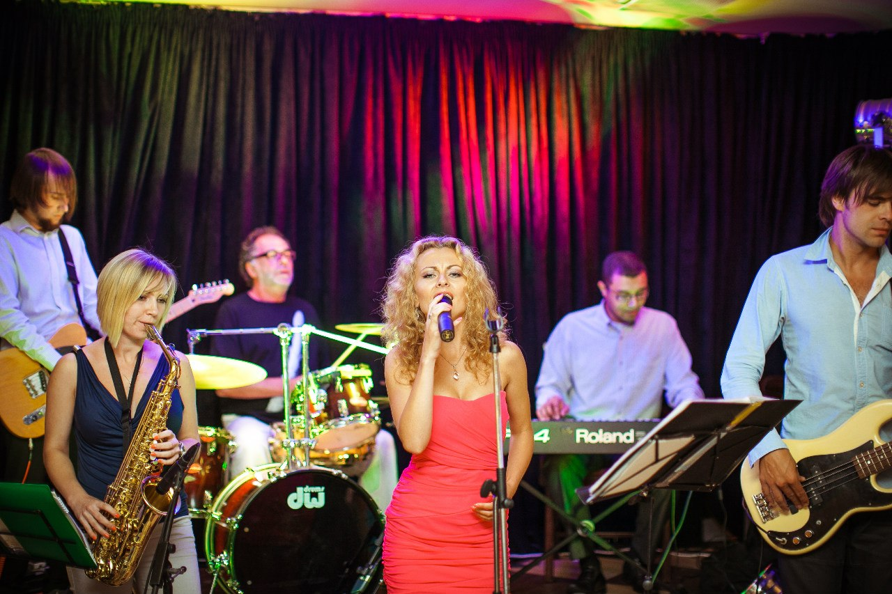
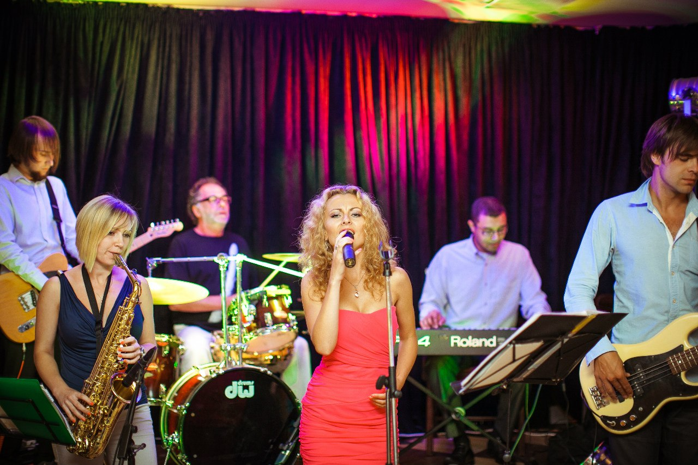
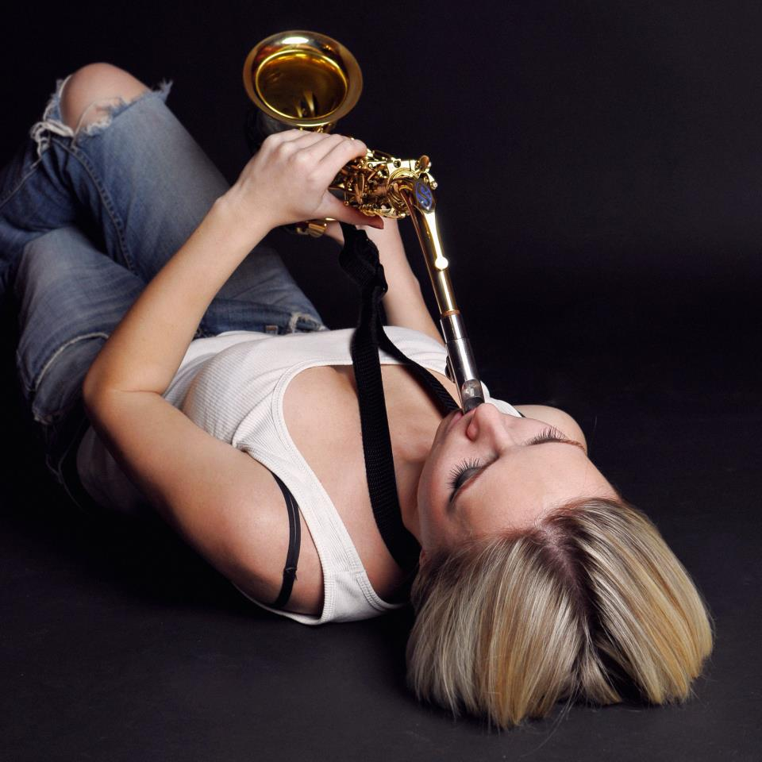
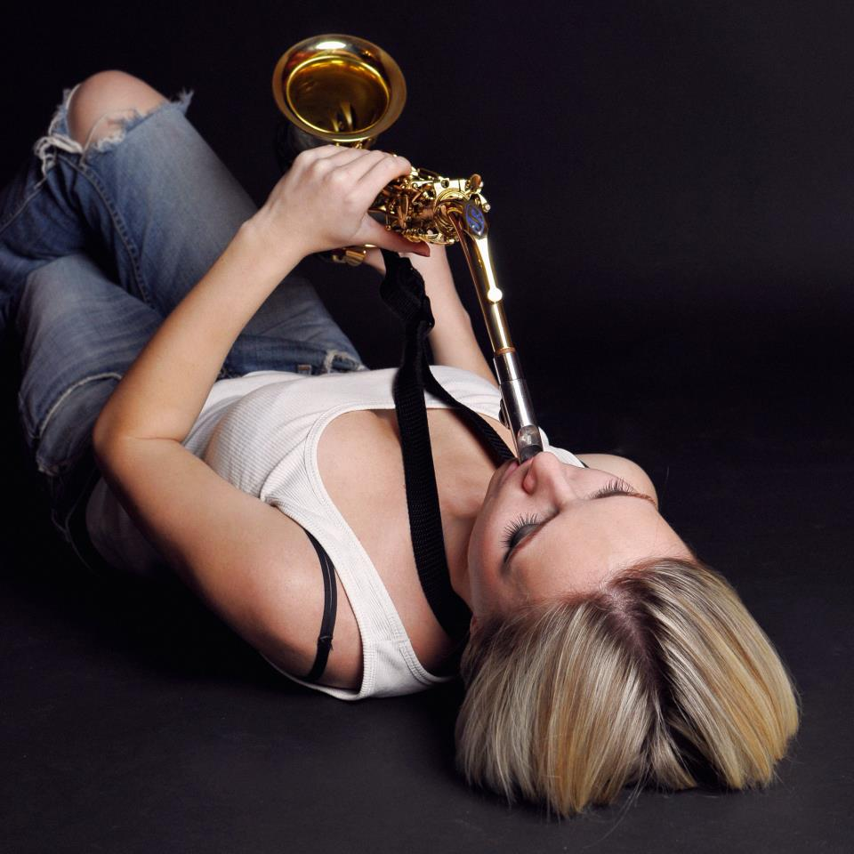

IRYNA PRYTULA
SAXOPHONIST
Iryna Prytula is an alto-saxophonist. She performes solo, in duo "CHEEK TO CHEEK" and as session musician in different bands.
Graduated from Lviv Music College and Lviv National Music Academy. Iryna participated in the Cho-Jazz International Jazz Summer Workshop in Poland. In 2007 Iryna graduated from Stanislav Ludkevych Lviv Music College; specialty - music teacher (saxophone). 2008 - participated in the Cho-Jazz Internationaal Jazz Workshop in Poland, Chodziez. In 2012 she graduated from Mykola Lysenko Lviv National Music Academy; specialty - saxophone.
Work experience
2010 - worked as musician in Delphin Hotel in Antalia, Turkey. 2007 - to current - work as session musician with different ensembles. 2011 - to current - together with pianist, Tom Lugoloobi, made a duo "CHEEK TO CHEEK". Perform in different clubs in Lviv & other cities.
Gallery
 

 
